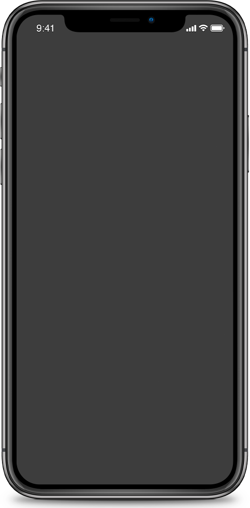
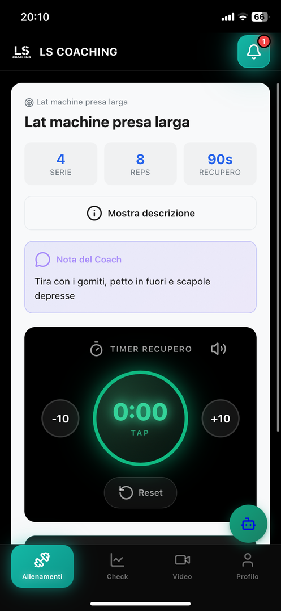
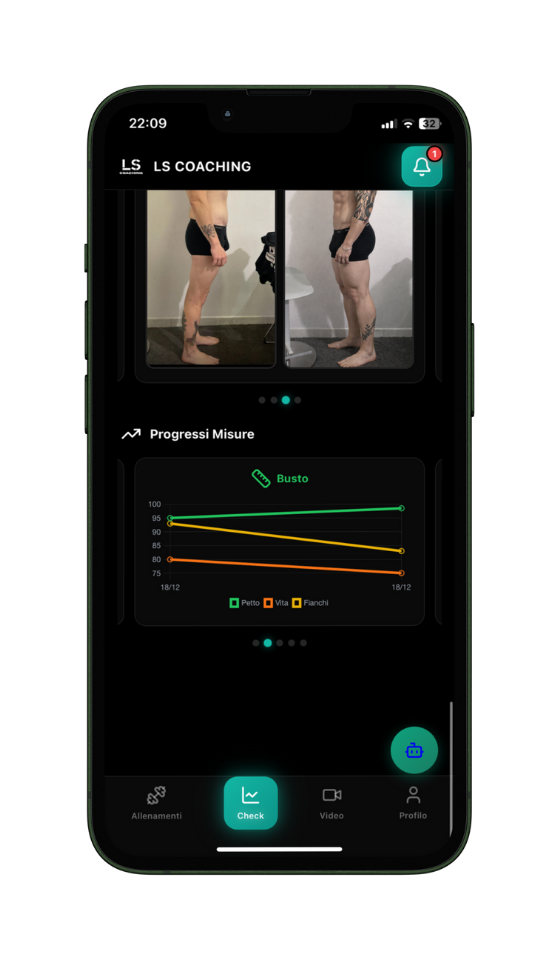
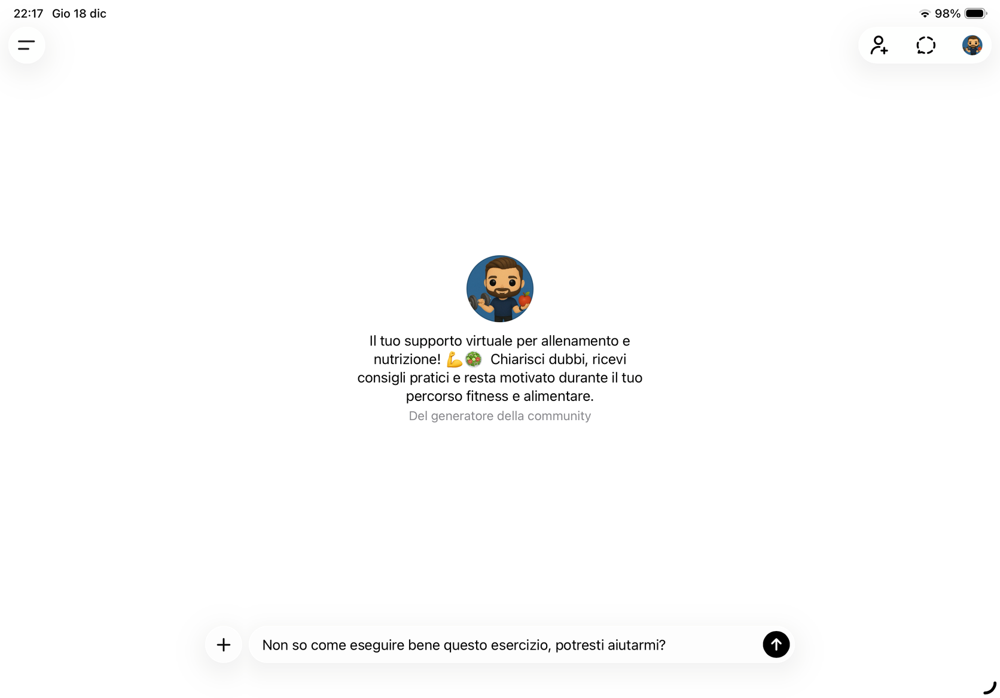

“Finalmente allenamento e alimentazione hanno una logica unica: so cosa fare e perché lo sto facendo.”
Metodo chiaroCoaching Premium Online
Coaching Premium Online
Il tuo prossimo coach è qui. Inizia con un incontro gratuito, poi decidi se continuare. Trasforma questo nel tuo ultimo percorso lasciato al caso.
Figura ibridaAllenamento e nutrizione nello stesso percorso.
2 check al meseOnline, direttamente da casa tua.
Premium su misuraAllenamento + nutrizione + supporto continuativo
Prenota un incontro gratuito

4,5/5
Premium
Ultimo tentativo casualeMetodo, check e adattamenti
2check al mese inclusi
24/7supporto pratico tra i controlli
1metodo per allenamento e nutrizione
Cosa pensano i clienti
Persone seguite, non piani consegnati.
“I check mi aiutano a leggere peso, fame, energia e performance senza andare nel panico.”
Monitoraggio vero“Il percorso resta sostenibile anche nelle settimane difficili, perché viene adattato alla mia routine.”
Supporto praticoMetodo, aderenza e controllo continuo: la differenza è nel percorso.
Ma chi sarà il mio coach online?
Un metodo, una guida, zero copia-incolla.
Nel Premium non separiamo ciò che nella vita reale è collegato: performance, recupero, fame, stress e aderenza vengono letti insieme.

Leonardo
Personal trainer e nutrizionista.

Allenamento
Progressioni, tecnica e carichi su misura.
Nutrizione
Strategia pratica per pasti, weekend e routine.

Check
Dati, foto e feedback ogni due settimane.

App
Tutto organizzato in un unico posto.
Sì, ma il metodo cosa fa?
Custodisce il percorso.
Ogni scelta viene valutata con criterio: non ti consegno una dieta e una scheda separate, ma un sistema che si aggiorna quando cambia la tua vita.
Prenota un incontro gratuito Analisi continuaAllenamento, nutrizione e abitudini nello stesso quadro.
Analisi continuaAllenamento, nutrizione e abitudini nello stesso quadro.Con me non sei
mai solo
Affrontare tutto da solo non ha senso. Per questo il percorso prevede supporto e correzioni pratiche quando cambiano lavoro, fame, energia o disponibilità ad allenarti.
WhatsAppMailTelegramFaxPiccione viaggiatoreCheck
Non è il solito coaching online
Ci siamo sempre.
Creo una combinazione semplice di comodità, metodo e tecnologia per ridurre ogni ostacolo lungo il percorso.
- Professionista laureato e abilitato
- Allenamento e nutrizione coordinati
- Check online da dove vuoi
- Supporto diretto incluso
- App dedicata al percorso
- Controlli inclusi nel percorso
Coaching PremiumUn unico percorso integrato.
Coaching tradizionaleScheda, dieta e controlli spesso separati.
Sì, ma quanto costa?
Coaching Premium
Coaching Base
Base
Per chi vuole iniziare dall'allenamento.
- Personal trainer online dedicato
- Programma di allenamento personalizzato
- Progressioni ogni 2 settimane
- Check e feedback
- Accesso all’app dedicata
Più completo
Allenamento + Nutrizione
Premium
Per chi vuole un percorso coordinato e controllato.
- Personal trainer online dedicato
- Programma di allenamento personalizzato
- Progressioni e controlli ogni 2 settimane
- Piano nutrizionale pratico
- Video-feedback sulla tecnica
- Accesso all’app dedicata


Non sei ancora sicuro?
Parla con me: capiamo se ti basta il Base o se ha senso integrare anche la nutrizione.
Prenota un incontro gratuitoScopri anche
Altri percorsi
Ce lo chiedono spesso
Domande sul Coaching Premium.
Partiamo da una consulenza gratuita, raccogliamo dati, foto, misure, abitudini e preferenze, poi costruisco un piano integrato con check ogni due settimane.
Sì. Gli aggiornamenti fanno parte del percorso: il piano cambia quando cambiano dati, aderenza, fame, recupero, performance o routine.
Lo capiamo in consulenza. Se ti basta il Coaching Base te lo dico; se alimentazione e allenamento devono essere coordinati, allora ha senso il Premium.